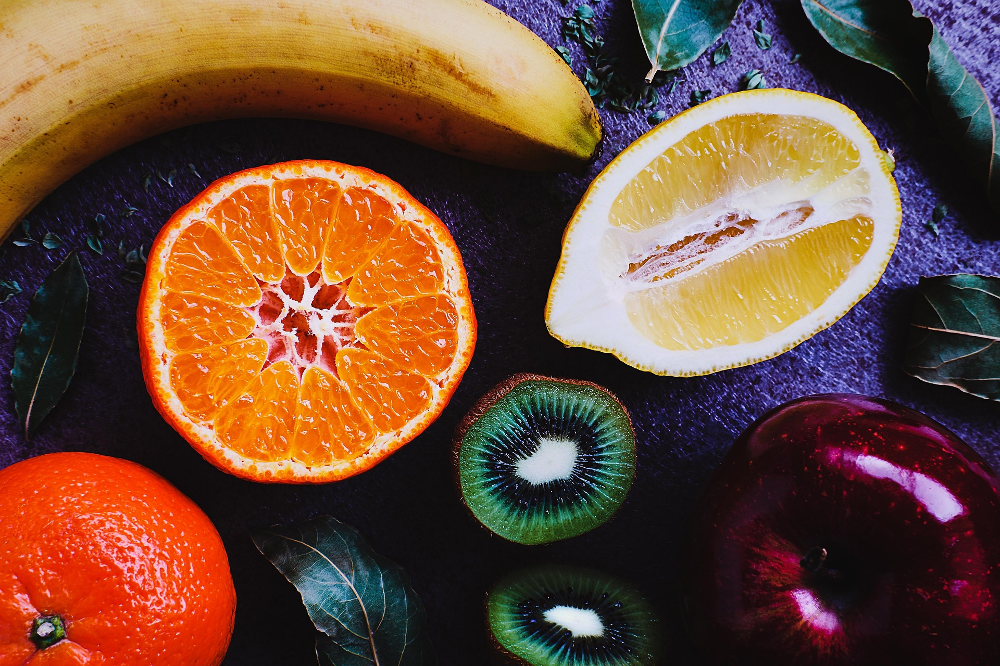
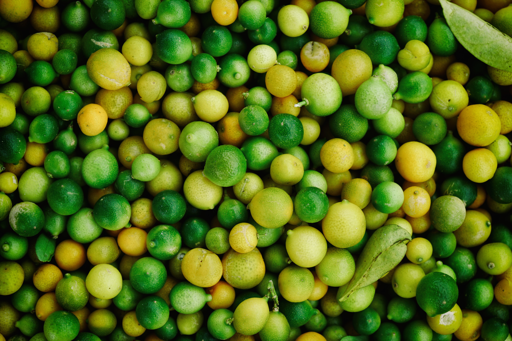
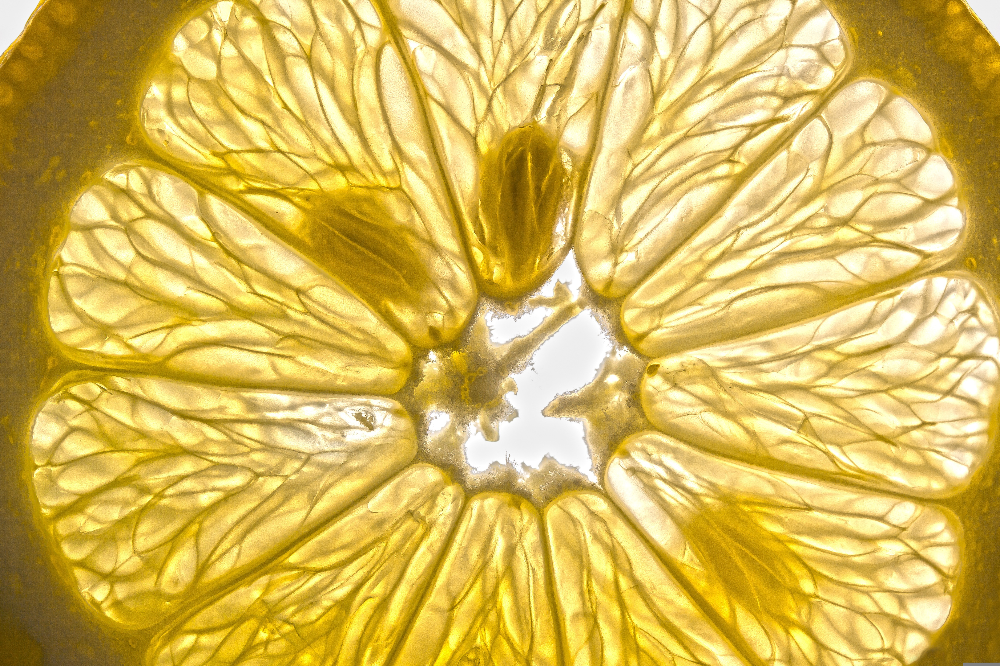
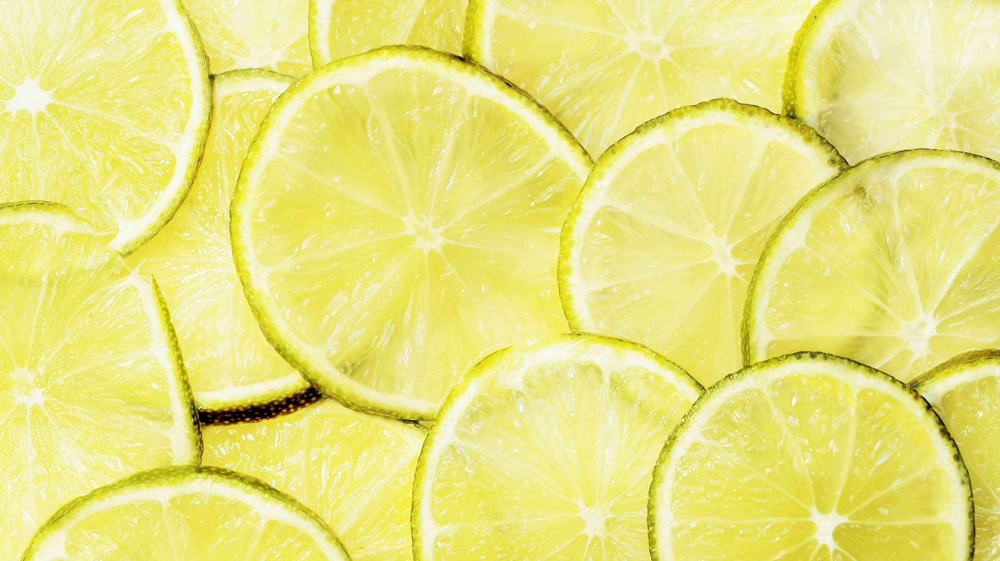

Background
This is the background introduction content.This is the background introduction content.This is the background introduction content.This is the background introduction content.This is the background introduction content.This is the background introduction content.

Project Design
This is the content of the project design.This is the content of the project design.This is the content of the project design.This is the content of the project design.This is the content of the project design.This is the content of the project design.

Engineering Success
This is the content related to the experimental results.This is the content related to the experimental results.This is the content related to the experimental results.This is the content related to the experimental results.This is the content related to the experimental results.This is the content related to the experimental results.

Human Practices
This is the content of human practice and popular science education.This is the content of human practice and popular science education.This is the content of human practice and popular science education.This is the content of human practice and popular science education.This is the content of human practice and popular science education.This is the content of human practice and popular science education.